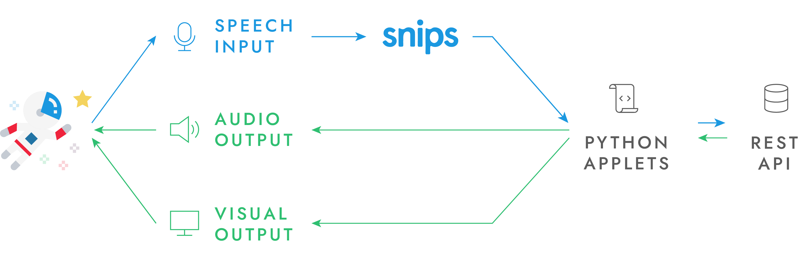
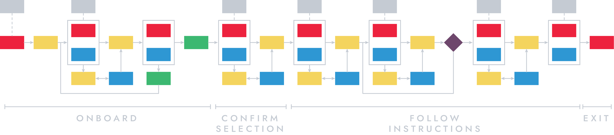

We designed and developed Cassiopeia – an intelligent lab assistant for extraterrestrial missions.
UI & UX Designer
Middleware & Back-end Developer
Project Co-Manager
During the master project at University of Bremen, we were required to collaborate with MaMBA at ZARM to design and develop a piece of technology that is helpful for scientists on an extraterrestrial mission.
Conducting scientific experiments is a huge part of the mission. Life inside the habitat is constrained enough without the frustrations from those laboratorial tasks, so the crew is in need of an effective lab assistant which is smart enough to not perturb them.
Lab experiments can escalate quickly, requiring a scientist to intensively use both of his hands to handle it. In such cases, both paper-based and digital guidebooks don’t seem to help much as the scientist can’t pause an on-going experiment to look up the instruction. Hands-free interaction is an important feature while the user’s hands are busy.
There is an internet connection in the habitat, but the latency is bizarre! Theoretically, if one needs to send a message from Mars to Earth, it will take approximately 20 minutes for the message to reach the destination and vice-versa. In this case, the system needs to work offline or with an unstable internet connection.
Because the crew is physically and virtually isolated from the rest of the world, they need to figure out themselves how to use the system and how to fix it once it goes wrong. Therefore, intuitiveness becomes one of the utmost important requirements of the system.
It’s not that spacious inside the habitat! The crew shared a story of them keeping playing with the same board-games over and over because they couldn’t manage to bring more to the habitat. As a result, the system needs to be compact and we should prioritize utilization of available devices in the habitat.
CASSIOPEIA serves as a compact decentralized voice assistant that enables crew members to select an experiment they want to conduct and guides them through a predefined set of instructions of the chosen experiment. The interaction channels are verbal input, visual and auditory output.
The defined system comprises 4 vital components: the speech recognition module, the command execution module, the text-to-speech module, and the graphical user interface.
Central to our system is SNIPS – a freemium AI-powered on-device speech recognition service (now acquired by Sonos). This module requires some prior training to recognize what’s been said and its intentions, then triggers one or more applets (within the command execution module) mapped to those intentions. In the current use case, the applets are in charge of the information communication channel between the database server (also within the command execution module), the text-to-speech module, and the graphical user interface.
As we tested the system, we discovered that SNIPS did a good job in recognizing phonology (sound of the message), syntaxes (structure of the message), and semantics (logical meanings the message, regardless of context), but it didn’t show much supports in pragmatics (contextual meanings of the message). For example, by saying “I’m done” at the first step of an experiment, the crew members intend to go on to the second step; however, at the end of an experiment, that could mean that they want to successfully wrap up the experiment. Having discovered that, we separated the user flow into states, developed a state-machine accordingly, and applied it to the applets, so that SNIPS “understands” the real intention of a command based on the context.
The complementary GUI is a web-based application which acts as a pure visual output channel, i.e. no point-and-touch interaction included.
I – as an interaction designer – kept role-playing with other team members for hours (one as a crew member and the other as the system) to figure out the most natural and intuitive way to guide the crew members through the lengthy lab procedures. I figured out how lucky I was as the chosen use case was more of a planned program than a free spontaneous talk, thus, it’s easier to predict which actions will take place at a certain point in the user flow.
To maintain dialog consistency, we defined a couple of guidelines for the voice interface.
You may now ask yourself why such important information like Content was pushed to the very end of the message. The reason is actually simple: so that the crew member can remember it better! When the short-term memory can’t hold up to the amount of information going in anymore, it becomes a first-in-first-out queue, pushing the older information out to make space for the newer information. Actually, we had internally tested our dialog with the main content being transmitted before the instructions and observed quite a lot of distractions and confusion.
The GUI serves as a complementary output channel which, long story short, shows the crew members what’s being said through the auditory output channel. It aims at solving the complications of the conversational interface such as:
To tackle the mentioned problems, we started with building the wireframe together, then I instantly created this prototype of the UI in Figma with the following features:
The preliminary usability test showed huge improvements in terms of speed as well as accuracy of the commands given to the system compared to the version coming without the GUI. All participants who didn’t get the GUI shared that a GUI would have eased out the struggles they met during the test.
The hint-bubbles, however, seemed to give the test subjects a false restriction while giving commands: they tended to wait until the hint appeared and say exactly what the hint tells them to say, even though the system was capable of understanding more than what the hints showed. As a result, we decided to change the order of the hints so that the most important hint is shown first, so as to minimize the waiting time of the crew members. We also tried to adjust the wordings so that it’s clear that the hints are suggestions, not restrictions.
We carried out a between-subject user study inside the lab module at MaMBA with English-speaking participants experienced in labworks. All of them have heard of Google Assistant or Amazon Alexa, yet only a quarter of them had much experience with such technology. The participants were randomly assigned into two groups to perform the same lab experiment procedure, one with and the other without the GUI. We utilized SUS/PSSUQ questionnaires and conducted an interview with them afterwards to analyze the usability of the system. Here are what we found out from the usability test:
The complementary GUI became handy when it comes to long-to-very-long message transmission. Participants interacting with the hybrid system (with the GUI) didn’t need to ask the system to repeat the message that much in comparison to the pure conversational system, hence spent less time finishing the lab procedure. We also found out that inexperienced participants get started quicklier when using the hybrid system.
All participants seemed to turn towards the display/audio source while interacting with the system even though it’s technically okay to do otherwise. They shared that they prefer front-facing audio and graphical output or, at least, the display should be directly in front of them when they do the job. This shows their habits while communicating–regardless of with whom–and a slight dependency on the graphical interface.
In the case of a voice assistant, the voice of the text-to-speech engine and the quality of the speaker play a big role in determining user experience (similar to the case of devices with a display where UI design and the quality of the display are important). This includes the pace of the conversation, accent, intonation, pauses and stops, and how “natural” the speech engine is.